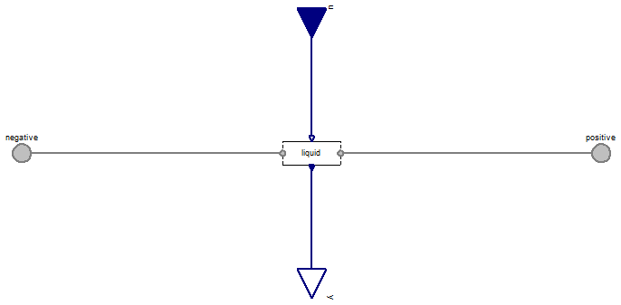

Table of Contents
- User's Guide
- Blocks
- Conditions
- Assemblies
- Regions
- Subregions
- Phases
- Species
- Chemistry
- Connectors
- Characteristics
- Units
- Quantities
- Utilities
- Icons
Download
- Latest: v0.1.2
FCSys.Conditions.ByConnector.BoundaryBus.Pair
Conditions for a pair of BoundaryBus connectorsInformation
Extends from Modelica.Icons.Package (Icon for standard packages).Package Content
| Name | Description |
|---|---|
| Impose a temperature difference across and a current between a pair of BoundaryBus connectors | |
| Impose a pressure difference across and a heat flow rate between a pair of BoundaryBus connectors | |
| Conditions for a BoundaryBus connector |
 FCSys.Conditions.ByConnector.BoundaryBus.Pair.Temperature
FCSys.Conditions.ByConnector.BoundaryBus.Pair.Temperature
Impose a temperature difference across and a current between a pair of BoundaryBus connectors

Information
Extends from FCSys.Icons.Conditions.SingleShort (Short icon for a single-connector boundary condition).
Parameters
| Type | Name | Default | Description |
|---|---|---|---|
| Phases (click to edit) | |||
| Gas | gas | Gas | |
| Graphite | graphite | Graphite | |
| Ionomer | ionomer | Ionomer | |
| Liquid | liquid | Liquid | |
Connectors
| Type | Name | Description |
|---|---|---|
| BoundaryBus | negative | Negative-side multi-species connector for material, momentum, and energy |
| BoundaryBus | positive | Positive-side multi-species connector for material, momentum, and energy |
| RealInputBus | u | Bus of inputs to specify conditions |
| RealOutputBus | y | Output bus of measurements |
Modelica definition
model Temperature "Impose a temperature difference across and a current between a pair of BoundaryBus connectors" extends FCSys.Icons.Conditions.SingleShort; Phases.Gas gas "Gas"; Phases.Graphite graphite "Graphite"; Phases.Ionomer ionomer "Ionomer"; Phases.Liquid liquid "Liquid"; Connectors.BoundaryBus negative "Negative-side multi-species connector for material, momentum, and energy"; Connectors.BoundaryBus positive "Positive-side multi-species connector for material, momentum, and energy"; Connectors.RealInputBus u "Bus of inputs to specify conditions"; Connectors.RealOutputBus y "Output bus of measurements"; equation // Gas connect(gas.negative, negative.gas); connect(gas.positive, positive.gas); connect(u.gas, gas.u); connect(gas.y, y.gas); // Graphite connect(graphite.negative, negative.graphite); connect(graphite.positive, positive.graphite); connect(u.graphite, graphite.u); connect(graphite.y, y.graphite); // Ionomer connect(ionomer.negative, negative.ionomer); connect(ionomer.positive, positive.ionomer); connect(u.ionomer, ionomer.u); connect(ionomer.y, y.ionomer); // Liquid connect(liquid.negative, negative.liquid); connect(liquid.positive, positive.liquid); connect(u.liquid, liquid.u); connect(liquid.y, y.liquid); end Temperature;
FCSys.Conditions.ByConnector.BoundaryBus.Pair.Pressure
Impose a pressure difference across and a heat flow rate between a pair of BoundaryBus connectors
Information
Extends from Temperature (Impose a temperature difference across and a current between a pair of BoundaryBus connectors).
Connectors
| Type | Name | Description |
|---|---|---|
| BoundaryBus | negative | Negative-side multi-species connector for material, momentum, and energy |
| BoundaryBus | positive | Positive-side multi-species connector for material, momentum, and energy |
| RealInputBus | u | Bus of inputs to specify conditions |
| RealOutputBus | y | Output bus of measurements |
Modelica definition
model Pressure "Impose a pressure difference across and a heat flow rate between a pair of BoundaryBus connectors" extends Temperature( gas( H2( redeclare replaceable function materialSpec = Boundary.Pair.Material.pressure, redeclare replaceable function afterSpec = Boundary.Pair.Translational.force, redeclare replaceable function beforeSpec = Boundary.Pair.Translational.force, redeclare replaceable function thermalSpec = Boundary.Pair.Thermal.heatRate, redeclare replaceable function materialMeas = Boundary.Pair.Material.current, redeclare replaceable function afterMeas = Boundary.Pair.Translational.velocity, redeclare replaceable function beforeMeas = Boundary.Pair.Translational.velocity, redeclare replaceable function thermalMeas = Boundary.Pair.Thermal.temperature), H2O( redeclare replaceable function materialSpec = Boundary.Pair.Material.pressure, redeclare replaceable function afterSpec = Boundary.Pair.Translational.force, redeclare replaceable function beforeSpec = Boundary.Pair.Translational.force, redeclare replaceable function thermalSpec = Boundary.Pair.Thermal.heatRate, redeclare replaceable function materialMeas = Boundary.Pair.Material.current, redeclare replaceable function afterMeas = Boundary.Pair.Translational.velocity, redeclare replaceable function beforeMeas = Boundary.Pair.Translational.velocity, redeclare replaceable function thermalMeas = Boundary.Pair.Thermal.temperature), N2( redeclare replaceable function materialSpec = Boundary.Pair.Material.pressure, redeclare replaceable function afterSpec = Boundary.Pair.Translational.force, redeclare replaceable function beforeSpec = Boundary.Pair.Translational.force, redeclare replaceable function thermalSpec = Boundary.Pair.Thermal.heatRate, redeclare replaceable function materialMeas = Boundary.Pair.Material.current, redeclare replaceable function afterMeas = Boundary.Pair.Translational.velocity, redeclare replaceable function beforeMeas = Boundary.Pair.Translational.velocity, redeclare replaceable function thermalMeas = Boundary.Pair.Thermal.temperature), O2( redeclare replaceable function materialSpec = Boundary.Pair.Material.pressure, redeclare replaceable function afterSpec = Boundary.Pair.Translational.force, redeclare replaceable function beforeSpec = Boundary.Pair.Translational.force, redeclare replaceable function thermalSpec = Boundary.Pair.Thermal.heatRate, redeclare replaceable function materialMeas = Boundary.Pair.Material.current, redeclare replaceable function afterMeas = Boundary.Pair.Translational.velocity, redeclare replaceable function beforeMeas = Boundary.Pair.Translational.velocity, redeclare replaceable function thermalMeas = Boundary.Pair.Thermal.temperature)), graphite(redeclare replaceable Conditions.ByConnector.ThermalDiffusive.Pair.HeatRate 'C+', 'e-'( redeclare replaceable function materialSpec = Boundary.Pair.Material.pressure, redeclare replaceable function afterSpec = Boundary.Pair.Translational.force, redeclare replaceable function beforeSpec = Boundary.Pair.Translational.force, redeclare replaceable function thermalSpec = Boundary.Pair.Thermal.heatRate, redeclare replaceable function materialMeas = Boundary.Pair.Material.current, redeclare replaceable function afterMeas = Boundary.Pair.Translational.velocity, redeclare replaceable function beforeMeas = Boundary.Pair.Translational.velocity, redeclare replaceable function thermalMeas = Boundary.Pair.Thermal.temperature)), ionomer( redeclare replaceable Conditions.ByConnector.ThermalDiffusive.Pair.HeatRate 'SO3-', 'H+'( redeclare replaceable function materialSpec = Boundary.Pair.Material.pressure, redeclare replaceable function afterSpec = Boundary.Pair.Translational.force, redeclare replaceable function beforeSpec = Boundary.Pair.Translational.force, redeclare replaceable function thermalSpec = Boundary.Pair.Thermal.heatRate, redeclare replaceable function materialMeas = Boundary.Pair.Material.current, redeclare replaceable function afterMeas = Boundary.Pair.Translational.velocity, redeclare replaceable function beforeMeas = Boundary.Pair.Translational.velocity, redeclare replaceable function thermalMeas = Boundary.Pair.Thermal.temperature), H2O( redeclare replaceable function materialSpec = Boundary.Pair.Material.pressure, redeclare replaceable function afterSpec = Boundary.Pair.Translational.force, redeclare replaceable function beforeSpec = Boundary.Pair.Translational.force, redeclare replaceable function thermalSpec = Boundary.Pair.Thermal.heatRate, redeclare replaceable function materialMeas = Boundary.Pair.Material.current, redeclare replaceable function afterMeas = Boundary.Pair.Translational.velocity, redeclare replaceable function beforeMeas = Boundary.Pair.Translational.velocity, redeclare replaceable function thermalMeas = Boundary.Pair.Thermal.temperature)), liquid(H2O( redeclare replaceable function materialSpec = Boundary.Pair.Material.pressure, redeclare replaceable function afterSpec = Boundary.Pair.Translational.force, redeclare replaceable function beforeSpec = Boundary.Pair.Translational.force, redeclare replaceable function thermalSpec = Boundary.Pair.Thermal.heatRate, redeclare replaceable function materialMeas = Boundary.Pair.Material.current, redeclare replaceable function afterMeas = Boundary.Pair.Translational.velocity, redeclare replaceable function beforeMeas = Boundary.Pair.Translational.velocity, redeclare replaceable function thermalMeas = Boundary.Pair.Thermal.temperature))); // Note: In Dymola 2014, the paths must be explicitly given to prevent // the error "Cannot show the parameter dialog for redeclared class […]". end Pressure;